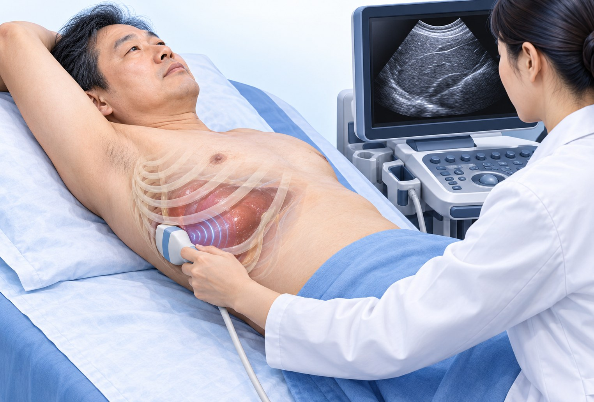
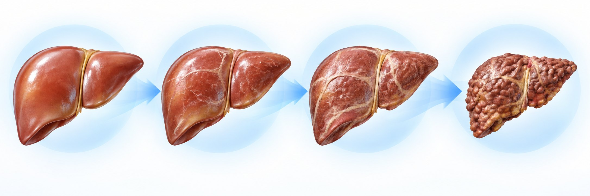

1이 검사는 — GE LOGIQ Fortis 2D-SWE(전단파 탄성 초음파)
무엇을 재나요간 속으로 보낸 약한 흔들림(전단파)이 퍼지는 속도를 잽니다. 간이 굳을수록 빨리 퍼지고, 이를 굳기 숫자 kPa(킬로파스칼)로 바꿉니다.
- 14~6시간 금식 후 바로 누워 오른팔을 머리 위로
- 2갈비뼈 사이에 탐촉자를 대고 숨을 잠깐 멈춘 채 측정
- 310번 재서 가운데 값(중앙값)이 결과 — 고르게 나와야 믿을 수 있음

오른팔 올리고 · 갈비뼈 사이2간 굳기 구간 — GE 2D-SWE 기준으로 내 숫자를 보세요

흉터 없음~가벼움
8.3 미만
0~1단계
GE 표의 흉터 없음~가벼움 범주. 낮아도 진행한 흉터를 배제 못 해 피검사와 함께 → 생활 처방
의미 있는 흉터
8.3이상~9.4미만
2단계
흉터가 생겼을 수 있음 → 피검사 등으로 더 평가하고 간 전문의 진료를 상의
심한 흉터
9.4이상~11.9이하
3단계
흉터가 많이 진행했을 수 있음 → 추가 검사·간 전문의 진료
간경변 의심
11.9 초과
4단계 · 약 12 넘으면
간경변 가능성 → 간 전문의 진료, 간암·합병증 정기 검사가 필요한지 확인
단위 kPa · GE HealthCare 2D-SWE 기준(LOGIQ E9·E10·E10s 백서 2020·가이드 2021) — 85명 소규모 연구의 참고 구간으로, Fortis 적용은 따로 확인되지 않았고 지방간 환자에게 그대로 맞지 않을 수 있습니다(더 낮은 숫자에서도 흉터 가능). 다른 기계와 바로 비교하지 않으며 약 10% 측정 변동이 있습니다.
지방 정도 — 간에 낀 기름의 양체중을 5%만 빼도 줄기 시작합니다. 혈당·혈압·콜레스테롤과 함께 관리합니다.
간 굳기 — 흉터(섬유화) 가능성을 추정흉터는 0~4단계, 4단계가 간경변. 한 번의 수치로 확정하지 않고 피검사와 함께 봅니다.